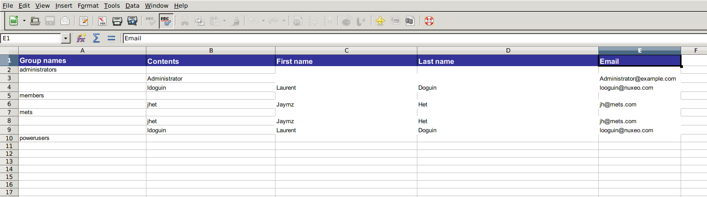
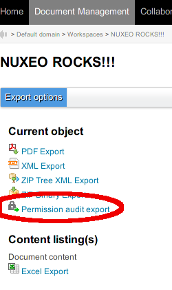
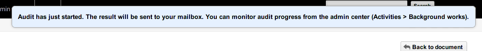
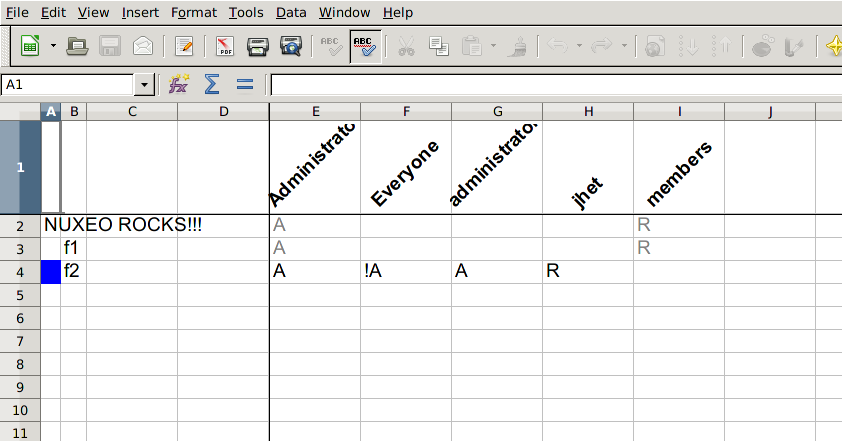
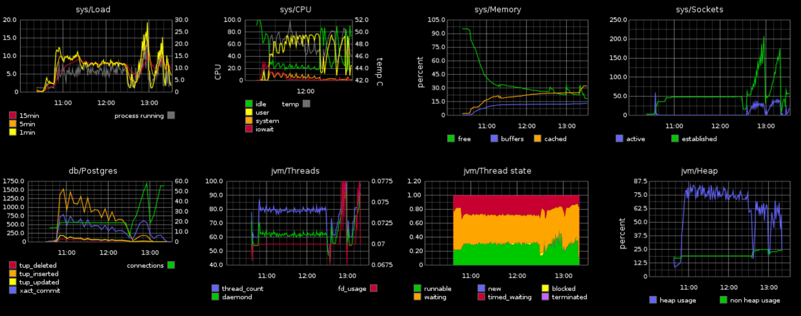
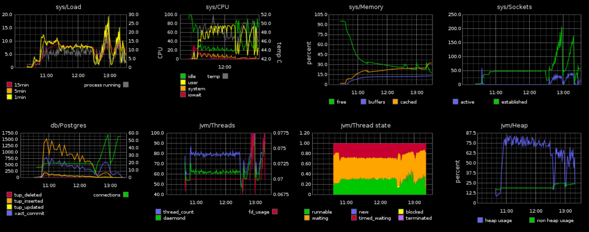

Release Notes
Release NotesFor Administrators
Right Audit
This Marketplace package allows to run an audit on all permissions for all users of a document tree. The result is an XLS matrix for every exported document showing permission for each user, and if there is a blocking permission.
You can also do an excel export of all the users and groups.





Kerberos Login Module
A Kerberos module has been contributed by OpenWide, allowing authentication throught the Kerberos protocol.
You can also login to Nuxeo using your OpenID, thanks to Nelson Silva:
Monitoring
Use Coda Hale Yammer Metrics to instrument Nuxeo, providing lots of internal metrics, accessible from JMX or Graphite. Read more on our documentation.
 


Nuxeo.conf new parameters
| Parameter | Default Value | Description |
|---|---|---|
| org.nuxeo.dnd.upload.timeout | 30000 | Maximum time for uploading a file via Drag & Drop to the server. |
| org.nuxeo.dnd.exec.timeout | 30000 | Maximum time for executing import of files uploaded via Drag & Drop |
| org.nuxeo.dnd.extendedmode.timeout | 2000 | Mouse over time before switching to extended mode UI (setting to -1 disables the extended mode) |
MarketPlace/Update Center
nuxectl commands
mp-show: Show Marketplace package(s) information. You must provide the package file(s), name(s) or ID(s) as parameter.